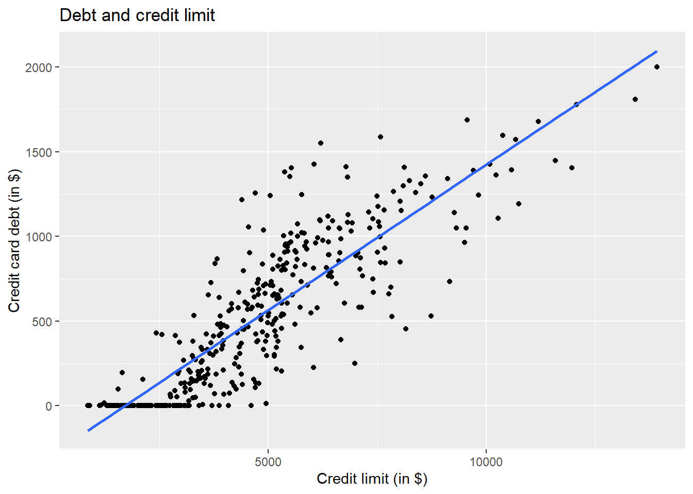
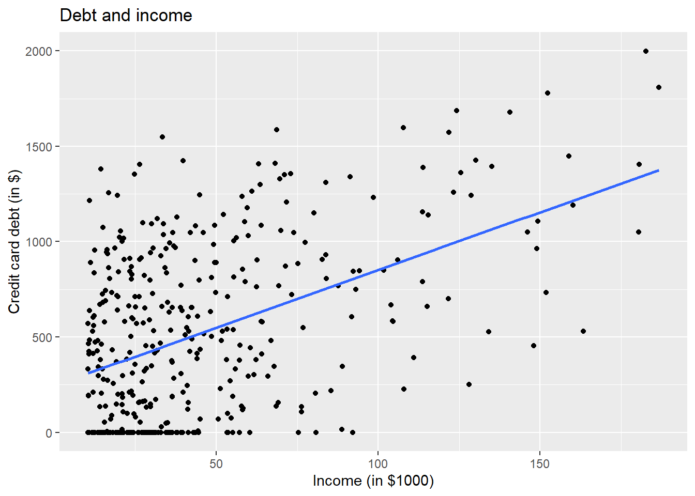
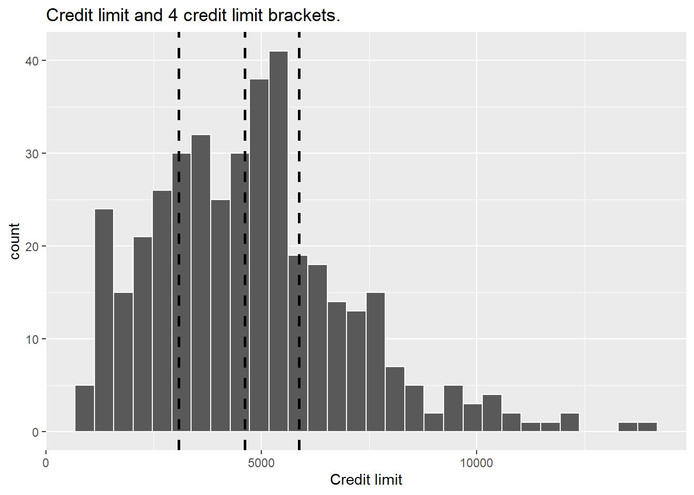

If one interprets data at aggregate level , results may be interpretted differently and when same data are evaluated at disaggregated level, one may reach at a different results. This is mainly due to some variable missing in the model. Therefore, care should always be observed while giving causal interpretation to a coefficient in econometric model.
This is data used from Introduction to Statistical Learning built in R-package ISLR. Using Credit data , we shall explore relationship between debt, income and credit limit. For more details , moderndive.com which is a book in econometric using R can be consulted. We shall select only variables of our interest from this credit data.
library(ISLR)
Warning: package 'ISLR' was built under R version 4.3.2
library(tidyverse)
Warning: package 'ggplot2' was built under R version 4.3.1
── Attaching core tidyverse packages ──────────────────────── tidyverse 2.0.0 ──
✔ dplyr 1.1.2 ✔ readr 2.1.4
✔ forcats 1.0.0 ✔ stringr 1.5.0
✔ ggplot2 3.4.3 ✔ tibble 3.2.1
✔ lubridate 1.9.2 ✔ tidyr 1.3.0
✔ purrr 1.0.1
── Conflicts ────────────────────────────────────────── tidyverse_conflicts() ──
✖ dplyr::filter() masks stats::filter()
✖ dplyr::lag() masks stats::lag()
ℹ Use the conflicted package (<http://conflicted.r-lib.org/>) to force all conflicts to become errors
If one looks at the summary statistics, 25% of the values of outcome variable debt are less than $68.5 while than $68.5 while $$68.75 while the outcome variables are credit_limit and income. credit_limit: the mean and median credit card limit are $4735.6 and $4622.50, respectively, while 75% of card holders had incomes of $57,470 or less.
As our outcome variable debt and explanatory variables income and credit_limit are all numerical, therefore, we shall find correlation between pairs of variables among these variables.
debt credit_limit income
debt 1.0000000 0.8616973 0.4636565
credit_limit 0.8616973 1.0000000 0.7920883
income 0.4636565 0.7920883 1.0000000
Correlation between explanatory variables is 0.792 which is quite high and given credit_limit or income, one can guess the other. So there seems high collinearity. But at the moment we dont discuss it.
Lest visualize the relationship between outcome variable debt and explanatory variables
ggplot(credit_ch6, aes(x = credit_limit, y = debt)) +geom_point() +labs(x ="Credit limit (in $)", y ="Credit card debt (in $)", title ="Debt and credit limit") +geom_smooth(method ="lm", se =FALSE)
`geom_smooth()` using formula = 'y ~ x'

ggplot(credit_ch6, aes(x = income, y = debt)) +geom_point() +labs(x ="Income (in $1000)", y ="Credit card debt (in $)", title ="Debt and income") +geom_smooth(method ="lm", se =FALSE)
`geom_smooth()` using formula = 'y ~ x'

Observe there is a positive relationship between credit limit and credit card debt: as credit limit increases so also does credit card debt. This is consistent with the strongly positive correlation coefficient of 0.862 we computed earlier.
From the graph one can see positive relationship between income and debt. Now we run multiple regress line and get @reg-table
#Regression model debt_model <-lm(debt ~ credit_limit + income, data = credit_ch6)library(broom)
Warning: package 'broom' was built under R version 4.3.1
Warning: package 'modelsummary' was built under R version 4.3.1
modelsummary(debt_model, shape = term ~ model + statistic)
(1)
Est.
S.E.
(Intercept)
−385.179
19.465
credit_limit
0.264
0.006
income
−7.663
0.385
@reg-table indicate Observe that regression coefficient of income is now negative and for every \(\$1000\) income increase there is debt reduction of \(\$7.66\). This is in contrast to earlier correlation and graphical analysis which shows positive association between income and debt.
So when credit_limit variable is included there is negative relationship between income and debt . Now lets look at disaggregated analysis between credit_limit and outcome variable debt.
Warning: Using `size` aesthetic for lines was deprecated in ggplot2 3.4.0.
ℹ Please use `linewidth` instead.
`stat_bin()` using `bins = 30`. Pick better value with `binwidth`.

Figure 1: Histogram of credit limit
Figure 1 25% (100) persons have credit limits between 0 and 3308 (low credit limit). 25% have between 3308 and 4622 (medium credit limit), 25% have credit limit between 4662 and 5873 (medium hight credit limit) and 25% have credit limit abot \(\$5873\) (hig credit limit).
Disaggregated data visualization
Lets have a plot between income and debt for the 4 credit limit separately and find out whether relationship is still positive.
Aggregate relationship between debt and income is positive but when we plot debt and income relationship for 4 separate categories, we find that relationship for med-low and med-high is negative, it is flat for low category and is only somewhat positive for high category. credit_limit is a confounding variable and without including credit-limit, results will be misleading.